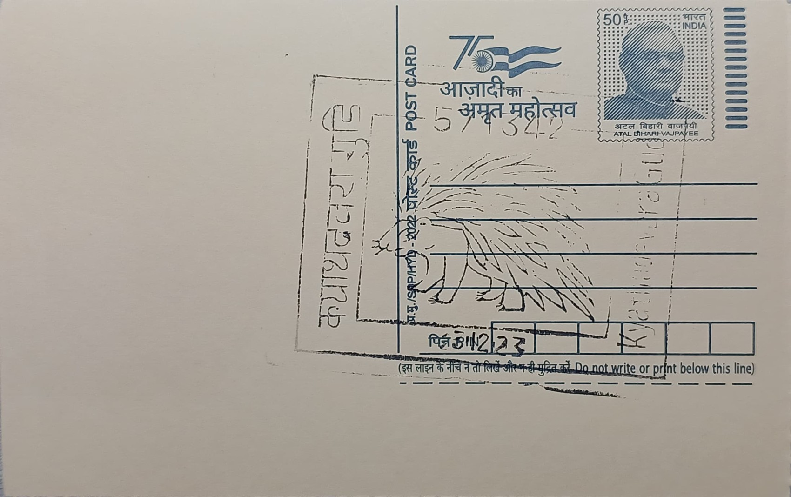

Porcupine
ಮುಳ್ಳುಹಂದಿ


The Indian crested porcupine (Hystrix indica) takes its common name from the dense crest of bristle-like hairs running from its head down its neck, which it raises when alarmed, and its scientific epithet simply denotes its wide range across the Indian subcontinent. A member of the Old World porcupine family Hystricidae, it is distinguished from New World tree porcupines by being entirely terrestrial and semi-fossorial rather than arboreal. Across Chamarajanagara district, where Kyathadevaragudi lies within the Bandipur-BRT corridor, the species is a familiar if rarely seen presence in deciduous scrub and dry forest, its burrow entrances and discarded quills often the only visible sign of its passage through the undergrowth.
Within India's rodent fauna, Hystrix indica holds the distinction of being the largest species, with adults weighing between 11 and 18 kilograms and measuring up to around 90 centimetres in body length excluding the tail. It is listed as Least Concern by the IUCN on account of its wide distribution and adaptability, though it receives legal protection in India under the Wildlife (Protection) Act, 1972, which bars hunting and trade in its quills and meat. Its significance in Chamarajanagara's forests is primarily ecological rather than iconic: as a bulk herbivore and burrowing animal, it influences soil turnover and vegetation structure in ways that larger, more celebrated species such as tiger and elephant do not.
The porcupine's quills, which are modified, keratinised hairs, are its defining physical feature, with the longest reaching up to roughly 51 centimetres and banded black-and-white specimens interspersed among shorter, denser spines over the rump and back. These quills are not thrown, as popular belief holds, but detach readily on contact and can embed deeply in an attacking predator, occasionally causing fatal infections in tigers or leopards that misjudge an attack. The animal digs extensive multi-chambered burrow systems, sometimes shared across generations, which it uses for daytime shelter and birthing, emerging after dusk to forage on roots, tubers, bark, and cultivated tubers and groundnut in fields bordering the forest.
A notable behavioural trait recorded in porcupine populations across Karnataka's Western Ghats and adjoining dry forests, including coconut and areca plantations studied in field surveys from the early 2000s, is the extent of crop damage the species causes by gnawing bark and digging up root crops, making it one of the more persistent human-wildlife conflict species in farming areas adjoining Bandipur and BRT. Despite this reputation, documented predation events, in which tigers or leopards have been found dead or injured with porcupine quills embedded in their limbs and jaws, underscore the real physical risk the species poses even to apex predators, a dynamic that has drawn specific attention from wildlife biologists studying prey-defence mechanisms in Karnataka's tiger landscapes.
Forest department records and camera-trap surveys conducted periodically across the Bandipur and BRT landscape, of which the forests around Kyathadevaragudi form a part, routinely log porcupine sign alongside that of larger mammals, reflecting its status as a baseline indicator species for undisturbed scrubland habitat. Anti-poaching patrols in the MM Hills and BRT divisions have periodically intercepted hunters targeting porcupines for meat and quills alongside larger game, prompting sustained monitoring by Karnataka Forest Department field staff in the area. The species today persists as an unglamorous but ecologically telling constant of the Chamarajanagara countryside, its burrows and quills a quiet counterpoint to the tiger and elephant sightings that otherwise define the district's wildlife reputation.
| Date of Introduction | January 21, 2022 |
|---|---|
| Address | Branch Postmaster, |
| Kyathadevaragudi BO, | |
| Chamarajanagara (dt.), Karnataka - 571342. |